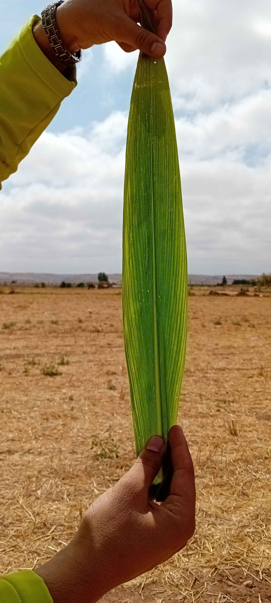
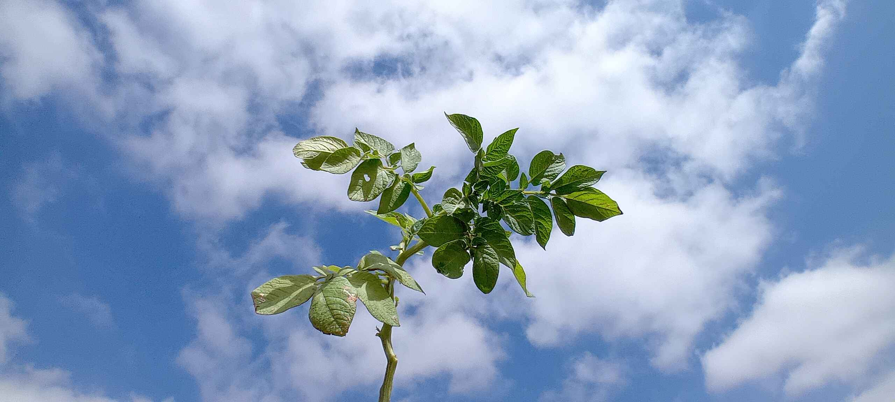

Monocotylédones

Adventices

Les mauvaises herbes monocotylédones sont un type de mauvaises herbes qui appartiennent au groupe des plantes monocotylédones,
c'est-à-dire des plantes dont les graines ne possèdent qu'un seul cotylédon ou feuille embryonnaire. Ces plantes se distinguent
également par leurs feuilles à nervures parallèles, leur tige souvent creuse et leurs systèmes racinaires fasciculés. Voici quelques
exemples courants de mauvaises herbes monocotylédones :
Le chiendent (Elytrigia repens) : Une mauvaise herbe vivace très répandue qui peut envahir rapidement les jardins et les cultures.
Le pâturin annuel (Poa annua) : Une mauvaise herbe annuelle qui pousse souvent dans les pelouses et les terrains de golf.
La digitaire (Digitaria spp.) : Une mauvaise herbe annuelle qui prolifère dans les sols pauvres et compacts.
Le souchet comestible (Cyperus esculentus) : Une mauvaise herbe vivace souvent trouvée dans les cultures de pommes de terre et de légumes.
L'ivraie (Lolium spp.) : Un mauvaise herbe annuelle ou vivace qui peut causer des problèmes dans les cultures de céréales.
Ces mauvaises herbes peuvent être particulièrement difficiles à gérer en raison de leur capacité à se propager rapidement et à résister à
certains herbicides. Les méthodes de contrôle incluent l'utilisation de désherbants spécifiques, la rotation des cultures, et des pratiques
culturales appropriées comme le binage et le paillage.

Les mauvaises herbes Dicotylédones sont un groupe de plantes indésirables qui appartiennent à la classe des dicotylédones.
Elles se caractérisent par leurs feuilles avec des nervures réticulées et leurs fleurs à quatre ou cinq pétales, entre autres caractéristiques.
Voici quelques exemples courants de mauvaises herbes dicotylédones :
Pissenlit (Taraxacum officinale) : Plante vivace avec des feuilles dentelées et des fleurs jaunes.
Liseron des champs (Convolvulus arvensis) : Plante vivace rampante avec des fleurs en forme de trompette, généralement blanches ou roses.
Chardon-Marie (Silybum marianum) : Plante annuelle ou bisannuelle avec des feuilles épineuses et des fleurs pourpres.
Renouée persicaire (Persicaria maculosa) : Plante annuelle avec des feuilles allongées et des petites fleurs roses ou blanches.
Lamier pourpre (Lamium purpureum) : Plante annuelle avec des feuilles en forme de cœur et des fleurs pourpres.
Ces mauvaises herbes peuvent être problématiques dans les jardins, les champs agricoles, et d'autres espaces cultivés car elles concurrencent
les plantes cultivées pour les ressources comme l'eau, la lumière et les nutriments. Pour les contrôler, on peut utiliser des méthodes mécaniques,
chimiques ou biologiques.


Les mauvaises Adventices ou simplement adventices, sont des plantes qui poussent de manière indésirable dans les cultures, les jardins,
ou d'autres espaces aménagés. Elles peuvent être des monocotylédones ou des dicotylédones. Les adventices posent divers problèmes, notamment en termes
de concurrence avec les cultures pour les ressources (eau, lumière, nutriments), hébergement de parasites et de maladies, et diminution de la qualité
des récoltes. Voici quelques exemples courants d'adventices :

Les mauvaises herbes sont des plantes indésirables qui poussent dans des endroits où elles ne sont pas souhaitées, telles que les jardins,
les champs agricoles, les pelouses, et d'autres espaces cultivés ou entretenus. Elles peuvent être problématiques car elles concurrencent les plantes
cultivées pour les ressources telles que la lumière, l'eau et les nutriments. De plus, elles peuvent abriter des parasites et des maladies. Voici quelques
exemples de mauvaises herbes courantes, ainsi que des méthodes pour les contrôler :


Définition Générale :Les mauvaises herbes sont des plantes indésirables qui poussent dans des endroits où elles ne sont pas souhaitées,
que ce soit dans les jardins, les pelouses, les champs agricoles, ou d'autres espaces aménagés.
Connotation :Le terme "mauvaises herbes" a une connotation plus générale et négative, impliquant toute plante qui interfère avec
les activités humaines, en particulier les activités de jardinage et d'agriculture.
Exemples :
Pissenlit (Taraxacum officinale)
Chardon-Marie (Silybum marianum)
Morelle noire (Solanum nigrum)
Nous sommes disponibles du lundi au samedi de 10h à 19h.

Appelez-nous au : +212 632401019 (du lundi au samedi de 10h à 19h)

Écrivez-nous sur l'adresse mail : assiaedd@gmail.com